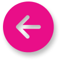

Info
Blah is an MIT open-source* automation software powered with selenium framework. This project is meant to get money inorder to support in restoring Democracy, Freedom and Justice and Human Rights in Myanmar ( Burma ).
The original websites used in the software will be managed and maintained by their owner.
For suggestions, making reviews and reporting bugs or user experiences, you can check the facebook page.
* Open-Source means it’s free to use and can be studied or improved by the public.